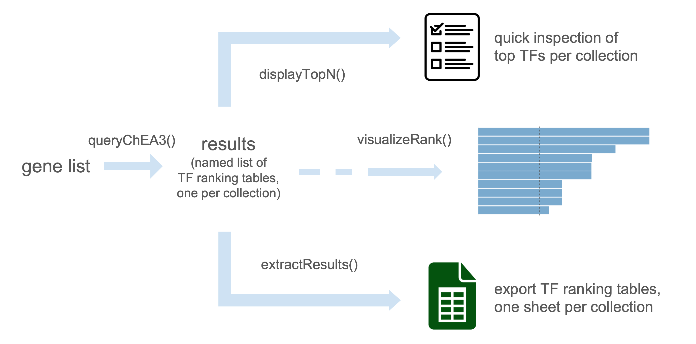

rChEA3: An R client for ChEA3 transcription factor enrichment API
Christophe Tav
October 2025
Source:vignettes/rChEA3.Rmd
rChEA3.RmdIntroduction
rChEA3 is an R client for the ChEA3 transcription factor enrichment API.
While ChEA3 is only available online as a web server, rChEA3 provides access to this tool directly in R, streamlining transcription factor enrichment into your workflow. Submit gene lists, retrieve TF rankings from multiple evidence sources (ChIP-seq, co-expression, literature), and integrate results into your R/Bioconductor analysis pipeline.
The package includes convenient functions to query the API, retrieve results across collections, prepare outputs for downstream analysis, and generate publication-ready figures.

Example workflow
This section demonstrates a typical workflow with rChEA3, from submitting a gene list to retrieving transcription factor enrichment results. The examples illustrate how to interact with the ChEA3 API, explore the different collections, and visualize results in a clear, publication-ready format.
We start by loading the package:
1. Submit a gene list
Provide a vector of gene symbols as input. The gene list should consist of HGNC-approved gene symbols, as ChEA3 only accepts these standardized gene identifiers.
genes <- c("TP53", "ESR1", "MYC", "NIPBL", "BRCA1")
results <- queryChEA3(genes)
#> Available results
#> ──────────────────────────────
#> ► Integrated Results
#> ✔ Mean Rank — Average integrated ranks across libraries
#> Use <your_result>[["Integrated--meanRank"]]
#> ✔ Top Rank — Top integrated rank across libraries
#> Use <your_result>[["Integrated--topRank"]]
#> ────────────────────
#> ► ChIP-Seq
#> ✔ ENCODE — Interactions mined from the ENCODE project
#> Use <your_result>[["ENCODE--ChIP-seq"]]
#> ✔ ReMap — Interactions mined from the ReMap project
#> Use <your_result>[["ReMap--ChIP-seq"]]
#> ✔ Literature — Interactions mined from the literature
#> Use <your_result>[["Literature--ChIP-seq"]]
#> ────────────────────
#> ► Coexpression
#> ✔ ARCHS4 — TF-target coexpression in the ARCHS4 dataset
#> Use <your_result>[["ARCHS4--Coexpression"]]
#> ✔ GTEx — TF-target coexpression in the GTEx dataset
#> Use <your_result>[["GTEx--Coexpression"]]
#> ────────────────────
#> ► Co-occurrence
#> ✔ Enrichr — TF-target co-occurrence in Enrichr queries
#> Use <your_result>[["Enrichr--Queries"]]
#> ────────────────────Note: For detailed information about the different ChEA3 collections and their underlying methodology, see Keenan et al., 2019.
2. Inspect top results
The function displayTopN() allows a quick inspection of the results by showing the top transcription factors from each collection. By default, the top 10 transcription factors are displayed without applying thresholds.
displayTopN(results)
#> Top 10 per collection
#> ──────────────────────────────
#> ► Integrated Results
#> ✔ Mean Rank - Average integrated ranks across libraries
#> Rank TF Score
#> 1 ZBED6 15.00
#> 2 PGR 41.25
#> 3 SON 45.50
#> 4 ZBTB21 46.50
#> 5 BPTF 58.50
#> 6 SPEN 58.50
#> 7 SMAD4 69.20
#> 8 ZNF12 78.33
#> 9 ARNT 87.00
#> 10 SAFB 93.00
#>
#> ✔ Top Rank - Top integrated rank across libraries
#> Rank TF Score
#> 1 TGIF2LY 0.0006143
#> 2 ZNF800 0.0006223
#> 3 CREB1 0.0007123
#> 4 RHOXF1 0.0012290
#> 5 HIVEP1 0.0012450
#> 6 NFYA 0.0014250
#> 7 ZNF654 0.0018430
#> 8 OSR2 0.0018670
#> 9 SP1 0.0021370
#> 10 BBX 0.0024570
#>
#> ────────────────────
#> ► ChIP-Seq
#> ✔ ENCODE - Interactions mined from the ENCODE project
#> Rank TF Scaled Rank Set_name Intersect FET p-value FDR
#> 1 CEBPB 0.008475 CEBPB_C2C12_MM9 3 0.009772 0.717
#> 2 ZNF217 0.016950 ZNF217_MCF7_HG19 3 0.012720 0.717
#> 3 CTCF 0.025420 CTCF_HEPG2_HG19 4 0.017380 0.717
#> 4 CEBPD 0.033900 CEBPD_K562_HG19 2 0.018070 0.717
#> 5 ZNF384 0.042370 ZNF384_CH12LX_MM9 3 0.019260 0.717
#> 6 ATF2 0.050850 ATF2_H1HESC_HG19 3 0.021370 0.717
#> 7 RELA 0.059320 RELA_GM12878_HG19 2 0.022770 0.717
#> 8 FLI1 0.067800 FLI1_MEGAKARYOCYTE_MM9 3 0.024120 0.717
#> 9 YY1 0.076270 YY1_GM12892_HG19 2 0.031250 0.717
#> 10 JUND 0.084750 JUND_H1HESC_HG19 3 0.037140 0.717
#> Odds Ratio
#> 9.358
#> 8.449
#> 5.697
#> 12.580
#> 7.167
#> 6.871
#> 11.080
#> 6.541
#> 9.289
#> 5.463
#>
#> ✔ ReMap - Interactions mined from the ReMap project
#> Rank TF Scaled Rank Set_name Intersect FET p-value FDR Odds Ratio
#> 1 CXXC4 0.003367 CXXC4 3 0.01325 0.911 8.314
#> 2 MBD3 0.006734 MBD3 2 0.07561 0.911 5.558
#> 3 KMT2B 0.010100 KMT2B 2 0.07561 0.911 5.558
#> 4 RFX2 0.013470 RFX2 2 0.07569 0.911 5.554
#> 5 MBD4 0.016840 MBD4 2 0.07578 0.911 5.550
#> 6 EOMES 0.020200 EOMES 2 0.07578 0.911 5.550
#> 7 TBXT 0.023570 TBXT 2 0.07604 0.911 5.539
#> 8 XBP1 0.026940 XBP1 2 0.07613 0.911 5.535
#> 9 ZBTB33 0.030300 ZBTB33 2 0.07621 0.911 5.531
#> 10 FOXA1 0.033670 FOXA1 2 0.07621 0.911 5.531
#>
#> ✔ Literature - Interactions mined from the literature
#> Rank TF Scaled Rank Set_name
#> 1 ESR1 0.006098 ESR1_15608294_CHIPCHIP_MCF7_HUMAN
#> 2 E2F4 0.012200 E2F4_17652178_CHIPCHIP_JURKAT_HUMAN
#> 3 BACH1 0.018290 BACH1_22875853_CHIPPCR_HELAANDSCP4_HUMAN
#> 4 PPARD 0.024390 PPARD_23208498_CHIPSEQ_MDAMB231_HUMAN
#> 5 JUN 0.030490 JUN_21703547_CHIPSEQ_K562_HUMAN
#> 6 E2F7 0.036590 E2F7_22180533_CHIPSEQ_HELA_HUMAN
#> 7 CUX1 0.042680 CUX1_19635798_CHIPCHIP_MULTIPLEHUMANCANCERTYPES_HUMAN
#> 8 NANOG 0.048780 NANOG_18347094_CHIPCHIP_MESC_MOUSE
#> 9 POU3F1 0.054880 POU3F1_26484290_CHIPSEQ_ESC_MOUSE
#> 10 EGR1 0.060980 EGR1_19374776_CHIPCHIP_THP1_HUMAN
#> Intersect FET p-value FDR Odds Ratio
#> 2 0.000384 0.118 94.090
#> 3 0.003138 0.482 14.330
#> 3 0.010030 0.494 9.264
#> 2 0.010610 0.494 16.770
#> 3 0.013300 0.494 8.302
#> 1 0.013400 0.494 90.890
#> 4 0.016600 0.494 5.783
#> 3 0.016690 0.494 7.588
#> 3 0.019720 0.494 7.099
#> 1 0.019870 0.494 60.590
#>
#> ────────────────────
#> ► Coexpression
#> ✔ ARCHS4 - TF-target coexpression in the ARCHS4 dataset
#> Rank TF Scaled Rank Set_name Intersect FET p-value FDR
#> 1 TGIF2LY 0.0006143 TGIF2LY_ARCHS4_PEARSON 2 0.004325 1
#> 2 RHOXF1 0.0012290 RHOXF1_ARCHS4_PEARSON 2 0.004352 1
#> 3 ZNF654 0.0018430 ZNF654_ARCHS4_PEARSON 1 0.084660 1
#> 4 BBX 0.0024570 BBX_ARCHS4_PEARSON 1 0.084660 1
#> 5 ZNF407 0.0030710 ZNF407_ARCHS4_PEARSON 1 0.084660 1
#> 6 RLF 0.0036860 RLF_ARCHS4_PEARSON 1 0.084660 1
#> 7 ZNF552 0.0043000 ZNF552_ARCHS4_PEARSON 1 0.084660 1
#> 8 YY2 0.0049140 YY2_ARCHS4_PEARSON 1 0.084660 1
#> 9 REST 0.0055280 REST_ARCHS4_PEARSON 1 0.084660 1
#> 10 ZBTB24 0.0061430 ZBTB24_ARCHS4_PEARSON 1 0.084930 1
#> Odds Ratio
#> 26.93
#> 26.84
#> 13.51
#> 13.51
#> 13.51
#> 13.51
#> 13.51
#> 13.51
#> 13.51
#> 13.46
#>
#> ✔ GTEx - TF-target coexpression in the GTEx dataset
#> Rank TF Scaled Rank Set_name Intersect FET p-value FDR Odds Ratio
#> 1 ZNF800 0.0006223 ZNF800 3 0.0001677 0.136 40.53
#> 2 HIVEP1 0.0012450 HIVEP1 3 0.0001694 0.136 40.39
#> 3 OSR2 0.0018670 OSR2 2 0.0042690 0.538 27.11
#> 4 ADNP2 0.0024890 ADNP2 2 0.0043250 0.538 26.93
#> 5 NCOA3 0.0031110 NCOA3 2 0.0043520 0.538 26.84
#> 6 ZSCAN25 0.0037340 ZSCAN25 2 0.0043520 0.538 26.84
#> 7 ZNF317 0.0043560 ZNF317 2 0.0043520 0.538 26.84
#> 8 KLF11 0.0049780 KLF11 2 0.0043520 0.538 26.84
#> 9 ZNF705E 0.0056000 ZNF705E 2 0.0043520 0.538 26.84
#> 10 SP1 0.0062230 SP1 2 0.0043520 0.538 26.84
#>
#> ────────────────────
#> ► Co-occurrence
#> ✔ Enrichr - TF-target co-occurrence in Enrichr queries
#> Rank TF Scaled Rank Set_name Intersect FET p-value FDR Odds Ratio
#> 1 CREB1 0.0007123 CREB1 5 1.539e-07 4.39e-05 68.48
#> 2 NFYA 0.0014250 NFYA 5 1.539e-07 4.39e-05 68.48
#> 3 SP1 0.0021370 SP1 5 1.565e-07 4.39e-05 68.24
#> 4 SMAD4 0.0028490 SMAD4 5 1.565e-07 4.39e-05 68.24
#> 5 ATF2 0.0035610 ATF2 5 1.565e-07 4.39e-05 68.24
#> 6 SRY 0.0042740 SRY 4 5.135e-06 2.57e-04 55.16
#> 7 MYOD1 0.0049860 MYOD1 4 5.204e-06 2.57e-04 54.97
#> 8 AR 0.0056980 AR 4 5.204e-06 2.57e-04 54.97
#> 9 CRX 0.0064100 CRX 4 5.204e-06 2.57e-04 54.97
#> 10 NR5A1 0.0071230 NR5A1 4 5.204e-06 2.57e-04 54.97
#>
#> ────────────────────3. Extract the result for one particular collection
Each ChEA3 collection can be accessed by name. For example, to retrieve the integrated ranking:
meanRank_results <- results[["Integrated--meanRank"]]
head(meanRank_results)
#> Query Name Rank TF Score
#> 1 rChEA3_query 1 ZBED6 15.00
#> 2 rChEA3_query 2 PGR 41.25
#> 3 rChEA3_query 3 SON 45.50
#> 4 rChEA3_query 4 ZBTB21 46.50
#> 5 rChEA3_query 5 BPTF 58.50
#> 6 rChEA3_query 6 SPEN 58.50
#> Library
#> 1 ARCHS4 Coexpression,15
#> 2 ARCHS4 Coexpression,24;Enrichr Queries,11;ReMap ChIP-seq,84;GTEx Coexpression,46
#> 3 ARCHS4 Coexpression,60;GTEx Coexpression,31
#> 4 ARCHS4 Coexpression,26;GTEx Coexpression,67
#> 5 ARCHS4 Coexpression,68;GTEx Coexpression,49
#> 6 ARCHS4 Coexpression,22;GTEx Coexpression,95
#> Overlapping_Genes
#> 1 NIPBL
#> 2 MYC,BRCA1,ESR1,TP53
#> 3 NIPBL
#> 4 NIPBL,MYC
#> 5 NIPBL
#> 6 NIPBLSession info
sessionInfo()
#> R version 4.5.1 (2025-06-13)
#> Platform: x86_64-pc-linux-gnu
#> Running under: Ubuntu 24.04.3 LTS
#>
#> Matrix products: default
#> BLAS: /usr/lib/x86_64-linux-gnu/openblas-pthread/libblas.so.3
#> LAPACK: /usr/lib/x86_64-linux-gnu/openblas-pthread/libopenblasp-r0.3.26.so; LAPACK version 3.12.0
#>
#> locale:
#> [1] LC_CTYPE=C.UTF-8 LC_NUMERIC=C LC_TIME=C.UTF-8
#> [4] LC_COLLATE=C.UTF-8 LC_MONETARY=C.UTF-8 LC_MESSAGES=C.UTF-8
#> [7] LC_PAPER=C.UTF-8 LC_NAME=C LC_ADDRESS=C
#> [10] LC_TELEPHONE=C LC_MEASUREMENT=C.UTF-8 LC_IDENTIFICATION=C
#>
#> time zone: UTC
#> tzcode source: system (glibc)
#>
#> attached base packages:
#> [1] stats graphics grDevices utils datasets methods base
#>
#> other attached packages:
#> [1] rChEA3_0.1.0
#>
#> loaded via a namespace (and not attached):
#> [1] gtable_0.3.6 jsonlite_2.0.0 dplyr_1.1.4 compiler_4.5.1
#> [5] crayon_1.5.3 tidyselect_1.2.1 jquerylib_0.1.4 scales_1.4.0
#> [9] systemfonts_1.3.1 textshaping_1.0.3 yaml_2.3.10 fastmap_1.2.0
#> [13] ggplot2_4.0.0 R6_2.6.1 labeling_0.4.3 generics_0.1.4
#> [17] curl_7.0.0 knitr_1.50 tibble_3.3.0 desc_1.4.3
#> [21] lubridate_1.9.4 RColorBrewer_1.1-3 bslib_0.9.0 pillar_1.11.1
#> [25] rlang_1.1.6 cachem_1.1.0 xfun_0.53 S7_0.2.0
#> [29] fs_1.6.6 sass_0.4.10 timechange_0.3.0 cli_3.6.5
#> [33] pkgdown_2.1.3 withr_3.0.2 magrittr_2.0.4 digest_0.6.37
#> [37] grid_4.5.1 lifecycle_1.0.4 vctrs_0.6.5 evaluate_1.0.5
#> [41] glue_1.8.0 farver_2.1.2 ragg_1.5.0 rmarkdown_2.30
#> [45] httr_1.4.7 tools_4.5.1 pkgconfig_2.0.3 htmltools_0.5.8.1Citation
If you use this package, please cite:
Keenan, A.B., Torre, D., Lachmann, A., Leong, A.K., Wojciechowicz, M.L., Utti, V., Jagodnik, K.M., Kropiwnicki, E., Wang, Z., & Ma’ayan, A. (2019). ChEA3: transcription factor enrichment analysis by orthogonal omics integration. Nucleic Acids Research, 47(W1), W212–W224. doi:10.1093/nar/gkz446
Resources
- ChEA3 Web Server - Interactive tool and detailed documentation
- ChEA3 Publication - Original research article
- rChEA3 GitHub - Package source code and issues